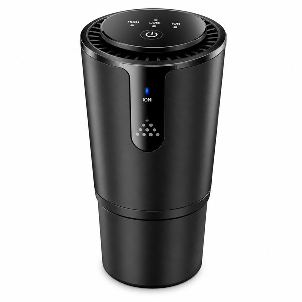
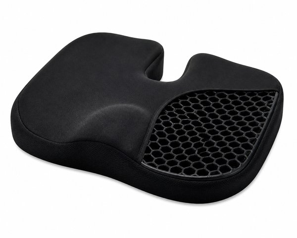
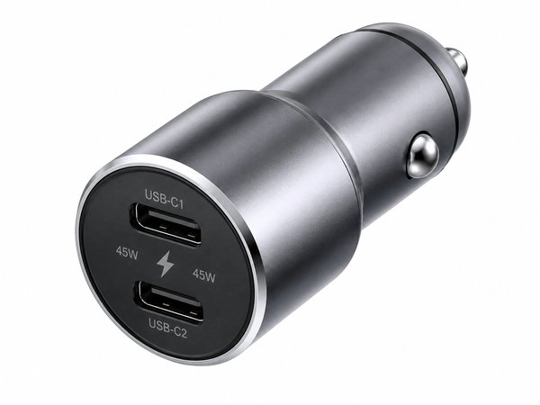
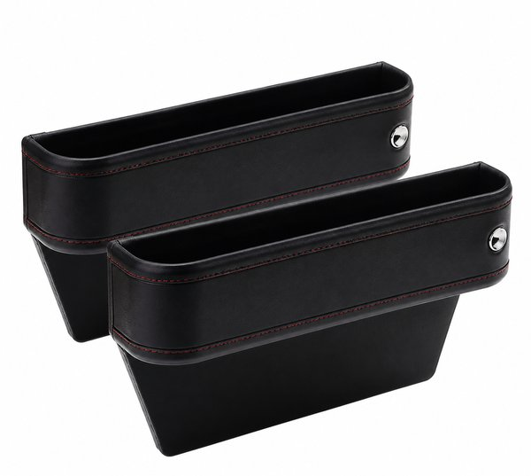
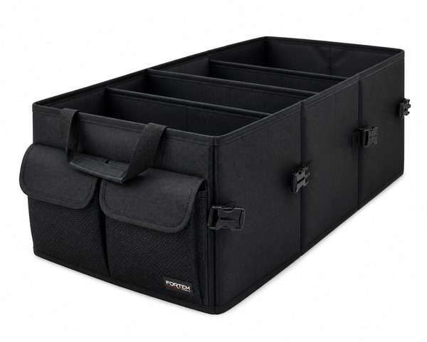
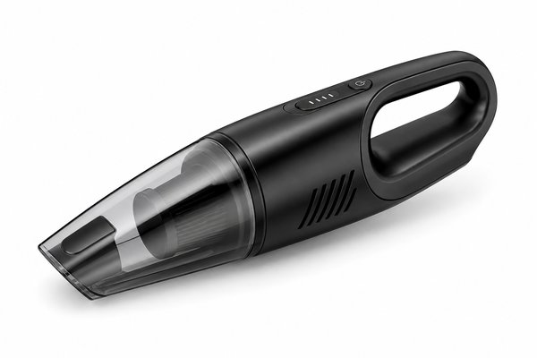
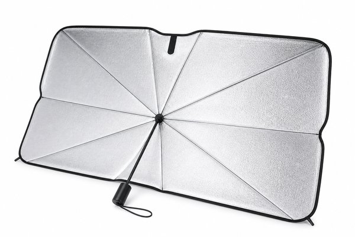
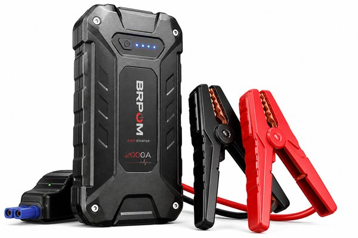
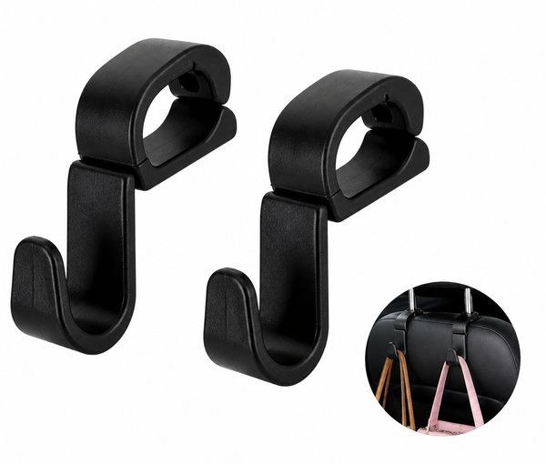

【2026年最新】車内が超快適空間に激変！通勤・ドライブが楽しくなる神カーアクセサリーおすすめ10選
毎日の車通勤、子どもや家族との送り迎え、休日の高速道路ドライブ。車内で過ごす時間は意外と長いのに、スマホの置き場や充電コードの絡まり、長時間の運転による腰やお尻の痛みに悩んでいませんか？
「車内をもっとすっきり整えたい」「長距離を運転しても体が全然疲れないシート環境を作りたい」という希望は、優秀な車載便利グッズをプラスするだけで驚くほど簡単に叶います。
本記事では、日常的に車を運転する編集部が実際に愛用して「これは全ドライバーに教えたい！」と感動した、車内が超快適空間に生まれ変わる神カーアクセサリーおすすめ10選をご紹介します。
- おすすめ10選 スペック・特徴比較表
- BEST 1｜車載スマホホルダー MagSafe対応 ワイヤレス急速充電器 CryoBoost冷却ファン付き
- BEST 2｜プラズマクラスターNEXT 車載用イオン発生機 IG-NX15 ドリンクホルダー型
- BEST 3｜ハグドライブ シートクッション 自動車用 骨盤サポート
- BEST 4｜Anker 535 Car Charger (67W) 3ポート急速シガーソケットチャージャー
- BEST 5｜車用 隙間落下防止サイドポケット PUレザー調クッション 2個組
- BEST 6｜車用 トランク収納ボックス 大容量68L 折りたたみ式 仕切り付き
- BEST 7｜車載ハンディクリーナー 強力吸引15000Pa コードレス小型掃除機
- BEST 8｜傘型 車用サンシェード 10本骨 折りたたみ式 遮光遮熱フロントガラス用
- BEST 9｜ポータブル 12V ジャンプスターター バッテリー上がり救援 8000mAh
- BEST 10｜車用 ヘッドレストフック 耐荷重20kg 荷物・買い物袋掛け 2本組
- 🎁【読者限定】完全無料で試せる人気サービス
- まとめ：生活をラクにする最初の一歩
| 順位 | 商品名 | ブランド | 最大の特徴・おすすめ理由 | 総合評価 |
|---|---|---|---|---|
| BEST 1 | 車載スマホホルダー MagSafe対応 ワイヤレス急速充電器 CryoBoost冷却ファン付き | ESR（イーエスアール） | 片手で近づけるだけで瞬時に固定＆急速充電がスタート | 4.9 ★ |
| BEST 2 | プラズマクラスターNEXT 車載用イオン発生機 IG-NX15 ドリンクホルダー型 | SHARP（シャープ） | 高濃度イオンパワーで気になる車内の染み付いたニオイを徹底脱臭 | 4.9 ★ |
| BEST 3 | ハグドライブ シートクッション 自動車用 骨盤サポート | EXGEL（エクスジェル） | 圧迫感や前ズレを防ぎ何百キロ走ってもお尻や腰が驚くほどラク | 4.8 ★ |
| BEST 4 | Anker 535 Car Charger (67W) 3ポート急速シガーソケットチャージャー | Anker（アンカー） | 最大67W出力で移動中にノートPCやiPadも高速でフル充電可能 | 4.8 ★ |
| BEST 5 | 車用 隙間落下防止サイドポケット PUレザー調クッション 2個組 | カーメイト（CARMATE） | 一度落ちると拾うのが絶望的に大変なシート横の隙間を完全ブロック | 4.8 ★ |
| BEST 6 | 車用 トランク収納ボックス 大容量68L 折りたたみ式 仕切り付き | Oasser | トランク内の荷物の転がりや衝突音を完全に防止 | 4.8 ★ |
| BEST 7 | 車載ハンディクリーナー 強力吸引15000Pa コードレス小型掃除機 | Baseus（ベースアス） | スリムな水筒サイズでドアポケットやグローブボックスに常備可能 | 4.7 ★ |
| BEST 8 | 傘型 車用サンシェード 10本骨 折りたたみ式 遮光遮熱フロントガラス用 | Cartist | 傘を開く感覚でワンタッチ設置＆片付けができ毎日の駐車が超快適 | 4.8 ★ |
| BEST 9 | ポータブル 12V ジャンプスターター バッテリー上がり救援 8000mAh | Arteck | 救援を呼ぶと1万円以上かかるバッテリー上がりを自分ひとりで解決 | 4.8 ★ |
| BEST 10 | 車用 ヘッドレストフック 耐荷重20kg 荷物・買い物袋掛け 2本組 | 星光産業（EXEA） | ブレーキによる買い物袋やバッグの座席からの転落を完全防止 | 4.9 ★ |
車載スマホホルダー MagSafe対応 ワイヤレス急速充電器 CryoBoost冷却ファン付き

iPhoneを近づけるだけでカチッと強力吸着し、最大15Wで急速充電できる車載ホルダー。独自のCryoBoost冷却ファンを内蔵し、夏の炎天下やナビ使用中のスマホの発熱・バッテリー劣化を抑えて高速充電を維持します。
- 片手で近づけるだけで瞬時に固定＆急速充電がスタート
- 冷却ファン搭載で長時間のGoogleマップナビ中もスマホが熱くならない
- 悪路や急ブレーキでもビクともしない超強力マグネット
- MagSafe対応ケースまたは裸のiPhoneでの使用が前提
プラズマクラスターNEXT 車載用イオン発生機 IG-NX15 ドリンクホルダー型

最高峰濃度「プラズマクラスターNEXT」を搭載したカップホルダー型空気清浄機。エアコンの吹き出し口からの嫌なカビ臭、食べ物のニオイ、タバコ臭、花粉をスピーディに消臭し、車内を爽やかな空気に保ちます。
- 高濃度イオンパワーで気になる車内の染み付いたニオイを徹底脱臭
- USB給電式で車のシガーソケットやモバイルバッテリーから手軽に電源確保
- 静音設計でアイドリングストップ中や高速走行中も動作音が気にならない
- ドリンクホルダーの置き場所を1つ占有する
ハグドライブ シートクッション 自動車用 骨盤サポート

医療・福祉分野で培われた超柔軟ゲル素材「エクスジェル」を贅沢に採用した高級ドライブクッション。運転中の腰椎・骨盤にかかる負担と微細な路面振動を吸収し、長時間の運転でも腰やお尻が痛くなりません。
- 圧迫感や前ズレを防ぎ何百キロ走ってもお尻や腰が驚くほどラク
- 通気性の良い立体メッシュ生地で夏場も蒸れにくい
- 日本の職人が一つひとつ丁寧に仕上げた高い耐久性
- シート高が約2〜3cm上がるため座面ポジションの再調整が必要
Anker 535 Car Charger (67W) 3ポート急速シガーソケットチャージャー

シガーソケットに差し込むだけで最大67Wの超高出力を実現する3ポート車載充電器。USB-C×2とUSB-A×1を備え、スマホとタブレットだけでなくMacBookなどのノートPCまで車内で同時に急速充電できます。
- 最大67W出力で移動中にノートPCやiPadも高速でフル充電可能
- 3台同時に充電できるため家族や同乗者と取り合いにならない
- シガーソケットにすっぽり収まるコンパクトなメタルデザイン
- 高出力を発揮するには対応する急速充電ケーブルが必要
車用 隙間落下防止サイドポケット PUレザー調クッション 2個組

運転席とセンターコンソールの「魔の隙間」にスマホや鍵、小銭が落ちるのを完璧に防ぐすき間クッション。シートベルトのバックルに通すだけで隙間を埋めつつ、スマホやカードを収納できるポケットになります。
- 一度落ちると拾うのが絶望的に大変なシート横の隙間を完全ブロック
- 高級感のある上質なPUレザー素材で純正シートの内装に美しく馴染む
- スマホや駐車券がサッと置けるスマートなミニポケット付き
- コンソールとシートの隙間が広すぎる車種では調整が必要な場合あり
車用 トランク収納ボックス 大容量68L 折りたたみ式 仕切り付き

カーブやブレーキのたびに荷物がゴロゴロ転がるトランクのごちゃつきを一掃する大容量収納ボックス。撥水オックスフォード素材と頑丈な仕切り板付きで、洗車用具や買い物袋、アウトドア用品を美しく整理できます。
- トランク内の荷物の転がりや衝突音を完全に防止
- 可動式の間仕切りで入れるもののサイズに合わせてスペースを自由変更
- 底面に滑り止めテープ付きで走行中もズレない
- 68Lフルサイズで広げるとトランクの半分程度を占有する
車載ハンディクリーナー 強力吸引15000Pa コードレス小型掃除機

500ml水筒サイズのスマートなボディに、15000Paの超強力吸引モーターを搭載した車載用コードレス掃除機。フロアマットの砂利、シートのすき間の食べかす、ドリンクホルダーのホコリを一瞬で吸い取ります。
- スリムな水筒サイズでドアポケットやグローブボックスに常備可能
- 強力吸引でシートの縫い目に詰まった細かいゴミも逃さない
- USB Type-C充電対応で車内で手軽にチャージできる
- ダストカップの容量が小さめなので定期的なゴミ捨てが必要
傘型 車用サンシェード 10本骨 折りたたみ式 遮光遮熱フロントガラス用

折りたたみ傘を開くように数秒でパッと広げて設置できる新世代のフロントガラス用サンシェード。吸盤の跡がつかず、畳めばドアポケットにスッキリ収納。真夏や日中の車内温度の上昇とダッシュボードの劣化を防ぎます。
- 傘を開く感覚でワンタッチ設置＆片付けができ毎日の駐車が超快適
- チタンシルバー遮光コーティングで紫外線99%カット・圧倒的遮熱
- 折りたたみ傘サイズで車内の隙間に場所を取らずに収納できる
- ミラー部分の切れ込み形状がお乗りの車種と適合するか要確認
ポータブル 12V ジャンプスターター バッテリー上がり救援 8000mAh

冬場やライト消し忘れで突然起きるバッテリー上がりに、JAFや救援車を待たずに自力でエンジンを始動できる緊急用ジャンプスターター。スマホのモバイルバッテリーやLED懐中電灯としても使えてダッシュボードに必須の1台です。
- 救援を呼ぶと1万円以上かかるバッテリー上がりを自分ひとりで解決
- 付属クランプをつないでキーを回すだけの直感的な操作性
- スマホの非常用急速充電器やSOSフラッシュライトとしても活躍
- 半年に1回程度の定期的な残量チェックと充電が必要
車用 ヘッドレストフック 耐荷重20kg 荷物・買い物袋掛け 2本組

前席のヘッドレストポールにカチッと取り付けるだけで、スーパーの買い物袋やビジネスバッグ、傘を掛けられる頑丈なフック。ブレーキをかけた瞬間に卵パックや食品が座席から床に転がり落ちる悲劇を確実に防ぎます。
- ブレーキによる買い物袋やバッグの座席からの転落を完全防止
- 耐荷重約20kgの高耐久設計で重いペットボトル袋も余裕
- 使わない時は座席の裏側にクルリと回して目立たず収納
- ヘッドレスト一体型シートの車種には取り付け不可
日々の暮らしや買い物を楽しむなら、人気雑誌1,000誌以上がスマホやタブレットで読み放題の「楽天マガジン」が圧倒的におすすめです！初回31日間は完全無料で、無料期間中に解約すれば料金は1円もかかりません。
＼ 読者負担0円！雑誌1,000誌読み放題 ／楽天マガジン 31日間無料お試しを詳しく見る →
💡 まとめ：生活をラクにする最初の一歩
車は移動手段であると同時に、プライベートな第2のリビングです。ピタッとくっつけるだけでナビと充電が同時にできるスマホホルダーや、長時間の運転でもお尻が痛くならないゲルクッションなど、費用対効果の抜群なアイテムが揃っています。快適な車内空間を作って、日々のドライブを最高に楽しんでみませんか。
楽天市場では「5と0のつく日」や「お買い物マラソン」などのキャンペーンに合わせて購入すると、ポイント還元が最大化してお得に手に入ります。ぜひチェックしてみてくださいね。